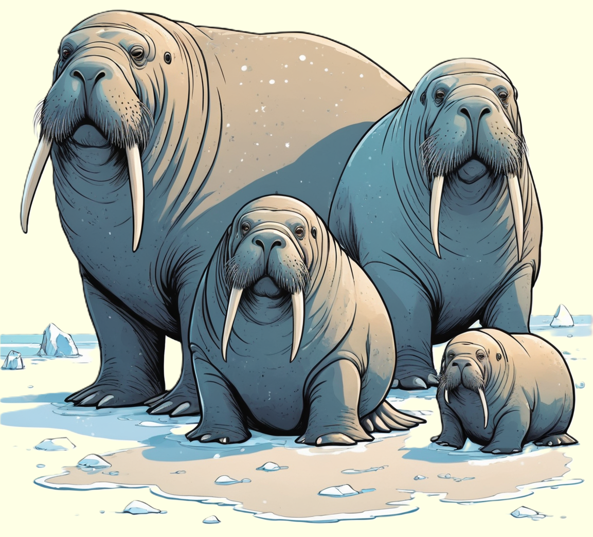

Das Walross, ein beeindruckendes Meereslebewesen, fasziniert mit seinen großen Stoßzähnen und seinem gemütlichen Lebensstil an den eisigen Küsten der Arktis.
Erkunde die spannende Welt dieser beeindruckenden Meeressäuger und erfahre, wie sie in den kalten Gewässern des Nordens leben.

Mächtige Meeresbewohner der Polargebiete
Walrosse sind beeindruckende Meeressäuger, die vorwiegend in den arktischen Gewässern der Nordhalbkugel anzutreffen sind. Mit ihren imposanten Stoßzähnen, die bei den Männchen besonders ausgeprägt sind, und ihrem massigen Körperbau sind sie leicht zu erkennen. Diese sozialen Tiere leben oft in großen Kolonien an den Küsten oder auf Eisschollen. Sie sind hervorragende Schwimmer und Taucher, wobei sie sich sowohl im Wasser als auch auf dem Eis geschickt bewegen können. Walrosse ernähren sich von einer Vielzahl von Meereslebewesen, darunter Muscheln, Schalentiere und kleinere Fische, die sie am Meeresboden suchen. Ihre charakteristischen Stoßzähne verwenden sie nicht nur beim Graben nach Nahrung, sondern auch beim Klettern auf Eisschollen und zur Verteidigung gegenüber potenziellen Bedrohungen.
In der Fortpflanzungszeit versammeln sich Walrosskolonien an den Küsten, um ihre Jungen zur Welt zu bringen. Die Weibchen pflegen eine enge Bindung zu ihren Kälbern, und die Kolonien bieten Schutz vor Raubtieren wie Polarbären und Orcas. Obwohl Walrosse an die extremen Bedingungen der Arktis angepasst sind, sehen sie sich zunehmend Herausforderungen durch den Klimawandel und den Verlust von Meereis ausgesetzt, was ihre Lebensräume und Nahrungsquellen bedroht.
Gefährdete Riesen des Nordens
Walrosse stehen vor verschiedenen Bedrohungen, die ihre Populationen und Lebensräume gefährden. Die schwindenden Meereisflächen und der Rückgang der arktischen Eisschilde beeinträchtigen die Fähigkeit der Walrosse, ihre bevorzugten Nahrungsquellen zu erreichen. Der Klimawandel bringt nicht nur Veränderungen in den Ökosystemen mit sich, sondern auch eine Zunahme menschlicher Aktivitäten in den arktischen Gewässern, einschließlich Schifffahrt und Ressourcennutzung. Diese Faktoren können zu Konflikten zwischen Menschen und Walrossen führen, zusätzlich zu den potenziellen Gefahren durch Ölkatastrophen und Umweltverschmutzung.
Der Schutz der Walrosse erfordert daher umfassende Maßnahmen, die von internationalen Umweltabkommen über nachhaltige Fischereipraktiken bis hin zur Schaffung von Meeresschutzgebieten reichen. Forschungseinrichtungen und Naturschutzorganisationen setzen sich dafür ein, das Verhalten und die Bedürfnisse der Walrosse besser zu verstehen, um effektive Schutzstrategien zu entwickeln. Die Aufklärung der Öffentlichkeit über die einzigartige Rolle dieser marinen Giganten in den arktischen Ökosystemen ist entscheidend, um das Bewusstsein für den Schutz dieser faszinierenden Meeresbewohner zu schärfen.